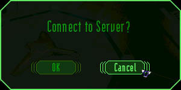
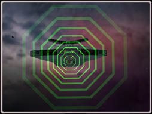

Basic Flight GuideWelcome Pilot. This is Solder Ronin speaking, sectional leader of the TRI Department for Novice Pilot Affairs. Please follow the guidelines below in preparation for your first assignments. This is only a primer for those pilots that are foolishly impatient. Make sure to read the complete pilots manual as soon as you can. You should also verify that your system meets the minimum system requirements. We trust you have undergone your practically painless genetic enhancement by now and are ready for the adventure of a lifetime. It might not have been entirely pleasant, but it sure beats having your guts liquefied by gravitational forces. Anyway, it's too late now to start whining. just think how impressed your neighbors will be when they hear about this. Of course, there might be a tad of a problem with some of your reproductive organs, but that's the price one must pay for the glory that surely lays before you. Examine the universal ship controls and communication commands before you try launching. Otherwise, you'll end up babbling to your very close friend, the nearest asteroid. |
| How to Fly | |
|
We suggest that you practice your flying skills in off-line mode. Just start the game without logging on to the server. This will allow you to familiarize yourself with all of the features and you can fly around in your starting sector all by yourself. Go ahead and try everything... there is no one around to make fun of you. If you see some ships blow 'em up... it's cool!  Now remember: this is space, not a joyride on the Galacto-Bahn of Delphan IX. Out here, the physics are different. If you need to change direction, it is not a simple matter of pointing your ship's nose that way. That's because there is only minor gravitic drag (actually resistance) in space, and therefore your original momentum will decrease very slowly. Eventually your thrusters will align you with your target, but that can take a while. This depends largely on your speed at the time of the course correction. Your rate of turn directly correlates with your engine thrust; the more power you give your engines, the slower your spin will be. When landing your craft, it is important to line up right in front of the docking bay. Fly towards it slowly otherwise you will overshoot. When you are close enough (about 300 clicks) stop completely and close in on it with short bursts of acceleration. To help you out, new pilots are given a Docking Computer MODx. With this device equipped, a green, holographic Docking Beacon will be displayed in your HUD. To use this device simply target the Docking beacon, and fly into it. The Docking Computer will take over, safely docking you at the station. 
|
| Your First Mission | |
|
At this point you have been assigned your first ship. It is most likely a scout with enough cargo space to store no more than four universal cargo units. Now it's time for the real thing. Press 'esc' to bring up the options menu. Connect to server by clicking on 'connect' in the options menu. Type in your callsign and password. You will be notified if your attempt is successful. Remember you must be a registered TRI pilot before we let you into space. First take a good look at your ship. Note all the important statistics, such as cargo capacity, gun- and missile hard points, equipment slots, armor, and others. You should find out everything there is to know about your vessel. Otherwise you might and up buying ten commodities only to find out that you have cargo space for four. Which means you have to sell the surplus at a 20% loss (which is the margin between the buy and sell price that stations charge). Not a good start! (Thanks anyway.)
Your best start will be a simple mission. Go to the mission computer, and choose a simple transport mission. This mission requires you to transport an important item from one station to another. Very exciting stuff! Call up the map ('m' key, or 'map' button while docked) to help you plot your course. Find the sectors you need to patrol, and locate the jumpgates that connect them. Open the map again and target the first jumpgate and fly towards it. To initiate a jump you must be inside a jumpgate. A yellow triangle will appear at the top of your central data display ring when you are in position to jump. Press 'j' on the keyboard to begin the jump process. After you reach all your waypoints and return to any station, you will be credited the appropriate amount. Before you start trading and/or engaging other vessels in combat, fly a few more missions. Use the credits you earn towards improvements for your ship. Then try to team up with other pilots and fly under the protection of a group. Once you have enough credits you may also purchase a mining laser and start mining asteroids for ore. That ore can be sold in any station, however the price paid will vary depending on the station's demand for the metals contained in the ore. Another good way to make money is to fly escort for a freighter. In exchange for your services, many freighter pilots will carry cargo for you or pay you in credits. They normally hang out in the bar trying to recruit people. Just look for the guy telling stories about flying through Conflux infested space. To complete transactions between pilots you will need to click on trade, select the pilot you would like to trade with, and start exchanging goods and credits. That's it. Remember this is just a quick guide to get you started. There are many different options for spending your time in this universe. Talk to other pilots, swap war stories, exchange ideas, and check the boards: the right information can save you thousands of credits. In a few months, when you have a real cool ship with first class equipment, you will look back fondly at this time and think: "my goodness, was I really such a ninny?" |